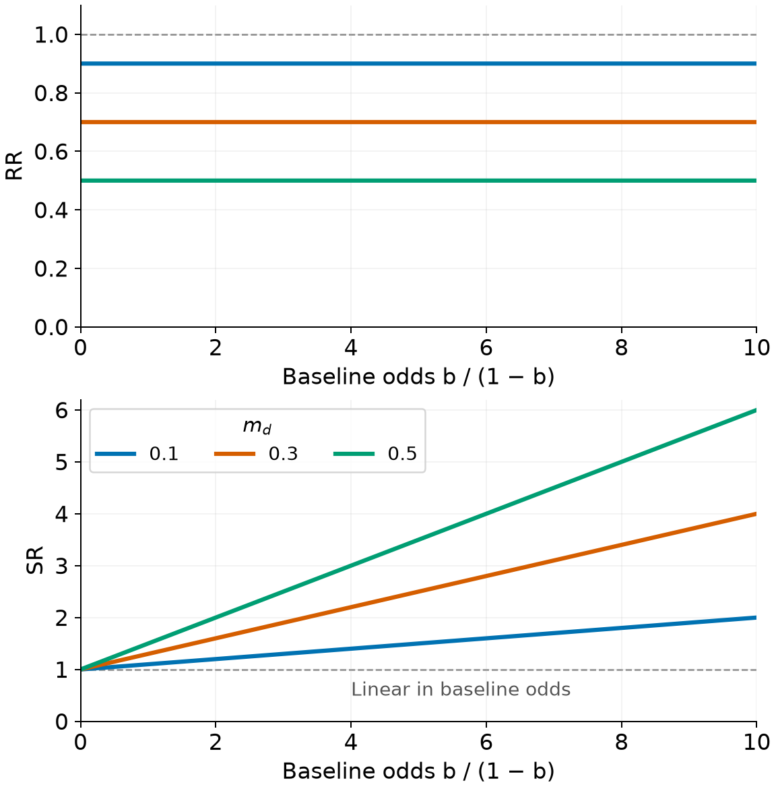
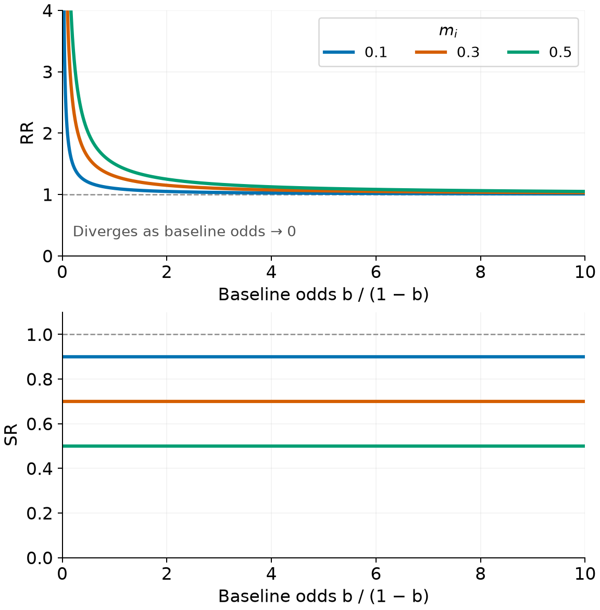
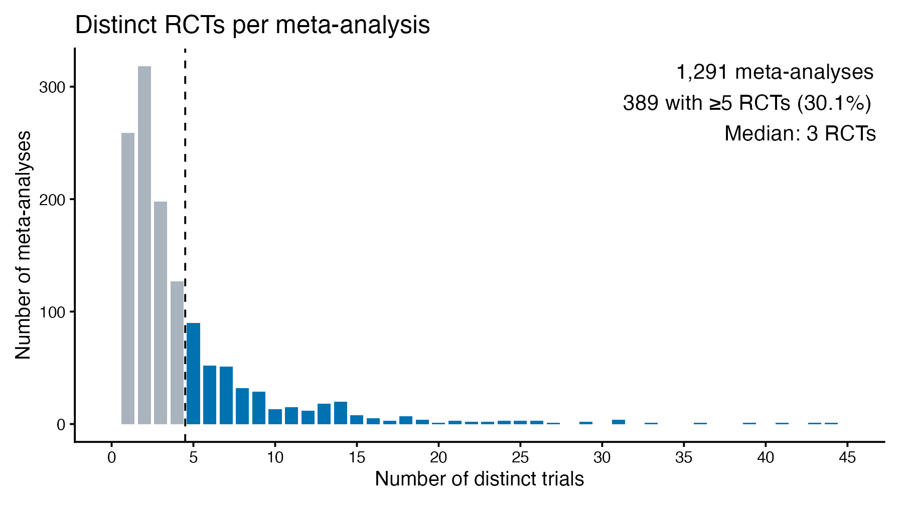
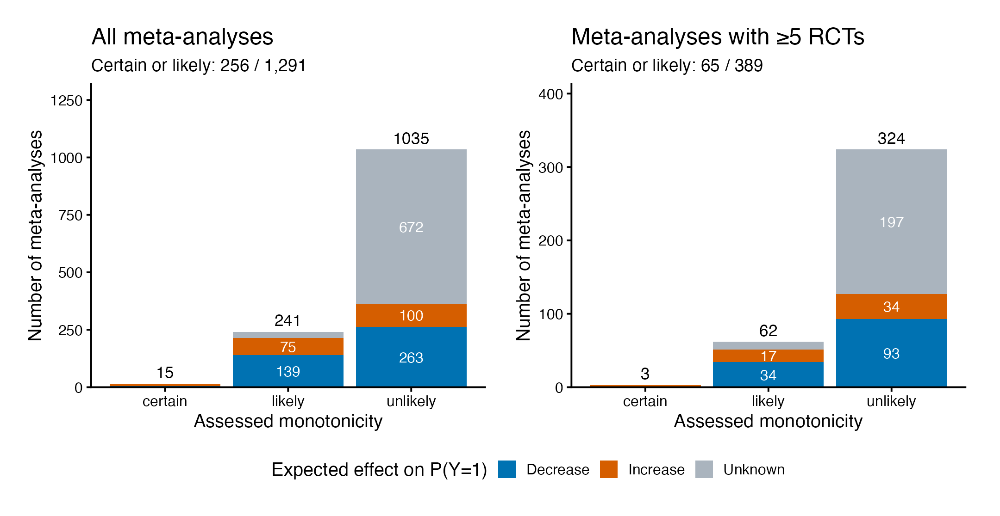
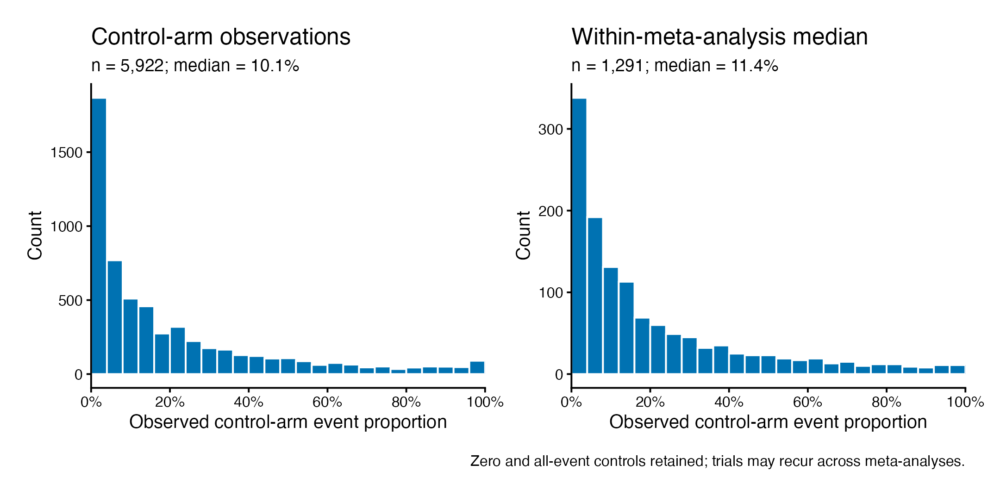

Effect Measure Stability
Getting unstuck
Department of Data Science Methods, Julius Center, University Medical Center Utrecht
2026-11-06
Why this discussion?
- We are stuck: several analyses, mixed findings, and a potentially negative empirical result.
- Some difficulties concern the estimators; others may concern the scientific assumptions or the available data.
- We want to turn this work into a coherent paper, with a clear question and an honest account of what we learned.
Today: which findings belong in that paper, and what still needs resolving?
Motivation
History
- April 2023, read paper “Risk Ratio, odds ratio, risk difference… Which causal measure is easier to generalize?”, Colnet et al
- Reached out to Benedicte Colnet, had a conversation
- Thought of an empirical project to test an hypothesis inspired by the paper
- Early 2024, Rodrigue Ndabashinze reached out to do his epidemiology MSc. thesis with me
- Jan 2025, started on this project, together with Valentijn de Jong
- May 2025, presented progress to Julie Josse and colleagues (remotely)
- … - now, statistical analysis
Effects of interventions
- In healthcare we need to make decisions regarding interventions (‘treatments’), based on their ‘effects’
- Let \(Y^0,Y^1\) be potential outcomes under treatment \(0\) and \(1\) respectively:
\[ \Psi = f(E[Y^0], E[Y^1]) \]
- If \(Y\) is binary, \(\Psi\) could be a risk difference (\(\Psi_{rd}\)), risk ratio (\(\Psi_{rr}\)), survival ratio (\(\Psi_{sr}\)), number needed to treat, odds ratio, etc.
Estimating effects
- We get estimates of treatment effects from RCTs, as these give us random samples from \(P(Y^0),P(Y^1)\), \(D=\)
| \(Y=0\) | \(Y=1\) | |
|---|---|---|
| control | \(\sum_{i}^{n_0} Y_i^0 = 0\) | \(\sum_{i}^{n_0} Y_i^0 = 1\) |
| treatment | \(\sum_i^{n_1} Y_i^1 = 0\) | \(\sum_i^{n_1} Y_i^1 = 1\) |
- For a well-conducted RCT, many choices \(\Psi\) are a valid measure of the treatment effect
How to use the RCT evidence?
- Typical highest standard of evidence: have a series of all \(k\) published RCT results, \(D_1, \ldots, D_k\).
- Calculate an effect meausre \(\Psi_i\) for each trial (with variance estimate \(v_i\)), and then combine them to get a single estimate with meta-analysis.
- \(\mu\) is overall effect measure; \(\Psi\) typically on log scale, or risk difference
- this is a ‘fixed effects’ model with a single underlying treatment effect
Heterogeneity poses challenges for decision making
- \(\Psi\) is a functional of the underlying joint distribution of \(Y^0\) and \(Y^1\), which may depend on covariates \(X\) among other factors:
\[ \Psi(x) = f(E[Y^0|X=x], E[Y^1|X=x]) \]
- Need to make a decision on interventions for a specific subpopulation (‘target’) with a specific distribution: \(P^*(Y^0,Y^1,X)\)
Issues with trial evidence
- Trials are typically conducted in specific subpopulations, which
- may not cover \(P^*(X)\) (e.g. elderly, pregnant women and children are often excluded)
- may have a different disctribution of \(X\)
- (when) are the trial results generalizable to the target population?
Meta-analysis with random effects
\[\begin{aligned} \Psi_i \mid \theta_i &\;\sim\; N \bigl(\theta_i,\;v_i\bigr), \quad i=1,\dots,k \\[6pt] \theta_i \mid \mu,\tau &\;\sim\; N\bigl(\mu,\;\tau^{2}\bigr) \end{aligned}\]- \(\mu\) is overall effect measure, \(\tau\) is heterogeneity of the effect measure (which could be 0)
- this is a random effects model, setting \(\tau=0\) retreives the ‘fixed effects’ model
Motivation
- Need to make assumptions to pick best measure for:
- learning about our target population
- decision making
- Though many choices of \(\Psi\) (risk ratio, survival ratio, risk difference, …) are causally valid measures of treatment effect, not all of them are created equally when it comes to their dependence on the underlying joint distribution of \(Y^0\) and \(Y^1\), i.e. their generalizability.
- Colnet showed that for treatments with monotonic effects (never hurting or never benefitting), the conditional risk ratio (/survival ratio) may be decoupled from baseline risk
Risk ratio, survival ratio, risk difference ,…
Russian roulette
When playing Russion roulette, the risk of dying is 1/6 if you play, and 0 if you don’t. Say we want to measure the effect of forcing people to undergo Russion roulette with a randomized trial.
- outcome: death in 30 days
- intervention: forcing people to play Russion roulette, or ‘care as usual’
In the control arm, for patients with covariates \(X=x\), there is a risk \(0 \leq b(x) \leq 0\) of dying in 30 days due to other causes. Writing \(a=1\) for roulette and \(a=0\) for control assignment, we have
\[ P\bigl(Y^{a=0} = 1 \mid X = x\bigr) = b(x) \]
Russian roulette ctd.
A person can either die from Russion roulette or from other causes (or not at all), so the total risk of death is:
\[ P\bigl(Y^a = 1 \mid X = x\bigr) = b(x) + a\,\underbrace{(1-b(x))\frac{1}{6}}_{\text{additional risk}}. \]
We’ll calculate a few different effect measures, averaged over the covariate distribution in population \(P\)
Roulette: risk difference
Average over the covariate distribution in population \(P\):
\[ \begin{aligned} \psi_{\mathrm{RD}}^P &:= P(Y^1=1) - P(Y^0=1) \\ &= \mathbb{E}_P\!\left[b(X)+\frac{1-b(X)}{6}\right] - \mathbb{E}_P[b(X)] \\ &= \frac{1}{6}\bigl(1-\mathbb{E}_P[b(X)]\bigr). \end{aligned} \]
The risk difference depends on baseline risk:
\[ \lim_{\mathbb{E}_P[b(X)]\to 1}\psi_{\mathrm{RD}}^P=0. \]
Roulette: risk ratio
For \(\mathbb{E}_P[b(X)]>0\),
\[ \begin{aligned} \psi_{\mathrm{RR}}^P &:= \frac{P(Y^1=1)}{P(Y^0=1)} \\ &= \frac{\mathbb{E}_P[b(X)]+\frac{1}{6}\bigl(1-\mathbb{E}_P[b(X)]\bigr)} {\mathbb{E}_P[b(X)]} \\ &= 1+\frac{1-\mathbb{E}_P[b(X)]}{6\,\mathbb{E}_P[b(X)]}. \end{aligned} \]
The risk ratio also depends on baseline risk:
\[ \lim_{\mathbb{E}_P[b(X)]\to 0^+}\psi_{\mathrm{RR}}^P=\infty, \qquad \lim_{\mathbb{E}_P[b(X)]\to 1}\psi_{\mathrm{RR}}^P=1. \]
Roulette: survival ratio
For \(\mathbb{E}_P[b(X)]<1\),
\[ \begin{aligned} \psi_{\mathrm{SR}}^P &:= \frac{P(Y^1=0)}{P(Y^0=0)} \\ &= \frac{1-\mathbb{E}_P\!\left[b(X)+\frac{1-b(X)}{6}\right]} {1-\mathbb{E}_P[b(X)]} \\ &= \frac{\frac{5}{6}\bigl(1-\mathbb{E}_P[b(X)]\bigr)} {1-\mathbb{E}_P[b(X)]} \\ &= \frac{5}{6}. \end{aligned} \]
The survival ratio is constant across populations with different baseline risks.
Lemma 6
Lemma 6 (Entanglement Model). For a binary outcome \(Y\), assume \(0 < p_a(x) < 1\) for all \(x \in \mathcal{X}\) and \(a \in \{0,1\}\), where
\[ p_a(x) := P\bigl(Y^a = 1 \mid X = x\bigr). \]
Define
\[ \begin{aligned} m_{\text{decrease}}(x) &:= P\bigl(Y^1 = 0 \mid Y^0 = 1, X = x\bigr), \\ m_{\text{increase}}(x) &:= P\bigl(Y^1 = 1 \mid Y^0 = 0, X = x\bigr). \end{aligned} \]
Then, writing \(b(x) := p_0(x)\),
\[ P\bigl(Y^a = 1 \mid X = x\bigr) = b(x) + a\bigl[(1-b(x))m_i(x) - b(x)m_d(x)\bigr]. \]
For Russian roulette, \(m_d(x)=0\), \(m_i(x)=1/6\), recovering the previous result.
Project hypotheses
- For meta-analyses of RCTs, if we assume:
treatment is monotonic (never harms or never benefits)
\[m_d(x)=0\quad\text{or}\quad m_i(x)=0,\]
RCTs differ in baseline risk, but not treatment effect (on appropriate scale)
\[\psi(x)=\psi\quad\text{for all }x,\]
- Performing meta-analyses for risk-ratio and survival-ratio and yield very different answers.
- ‘Incorrect’ scale: \(\psi\) depends linearly on odds of baseline risk
- Higher variance
Monotonic decrease in the outcome
\(b=P(Y^0=1)\); \(0<b<1\).
Assumptions: \(Y^1\leq Y^0\), \(m_i=0\), and \(m_d(x)=m_d\) across populations.
\[p_1=b(1-m_d).\]
\[\mathrm{RR}(b)=1-m_d\]
\[\mathrm{SR}(b)=1+m_d\frac{b}{1-b}\]
RR is constant; SR increases with baseline risk.

Monotonic increase in the outcome
\(b=P(Y^0=1)\); \(0<b<1\).
Assumptions: \(Y^1\geq Y^0\), \(m_d=0\), and \(m_i(x)=m_i\) across populations.
\[p_1=b+(1-b)m_i.\]
\[\mathrm{RR}(b)=1+m_i\frac{1-b}{b}\]
\[\mathrm{SR}(b)=1-m_i\]
SR is constant; RR approaches 1 as baseline risk increases.

Consequences for meta-analysis
- meta-analyses with varying baseline risks should see a coupling between baseline risk and either RR or SR (visible in ‘meta-regression’)
- as a consequence, one or the other scale may see different heterogeneity (\(\tau\)) estimates
- a meta-analysis on the ‘appropriate’ scale estimates a treatment effect that is both directly relevant to other populations and has lower uncertainty (all else equal)
Project set-up: an empirical evalution of the theory
Study main steps
- Go to library of meta-analyses of RCTs (Cochrane)
- Do wide search for meta-analyses of RCTs of interventions
- Pull RCT-level aggregated data from Cochrane library of random sample of 1000 RCTs
- Classify every outcome in every meta-analysis as increase or decrease
- Assess whether the treatment effect is likely monotonic (based on subject-matter knowledge)
- Look for statistical evidence about the predictions from the theory
Exploratory analysis: RCTs per meta-analysis

MA = review × comparison × outcome × subgroup; RCTs counted uniquely within each MA.
Exploratory analysis: monotonicity and direction

Of the 65 certain/likely MAs with ≥5 RCTs: 34 decrease, 20 increase, 11 unknown.
Exploratory analysis: baseline rates

Baseline rate = control events / control participants; 798 zero-event and 66 all-event controls.
Three empirical questions
Under monotonicity and constant mechanism strength, the direction-matched scale is stable across baseline risks.
| Question | Empirical target |
|---|---|
| Heterogeneity | Is between-trial variation smaller on the matched scale? |
| Coupling | Is the matched effect less associated with baseline risk? |
| Prediction | Does matching improve prediction of another trial? |
Matched = RR for an expected decrease in \(P(Y=1)\); SR for an expected increase.
Heterogeneity: analysis
Observed data
- Fit each MA on both RR and SR scales; compare between-trial heterogeneity.
- Classical analyses: paired comparisons and a second-stage mixed model with MA and review random intercepts.
- Bayesian extensions: per-MA fits followed by an across-MA model, or a joint single-stage hierarchy.
\[ \theta_m=\log(\tau_{m,\mathrm{matched}}) -\log(\tau_{m,\mathrm{mismatched}}). \]
Negative values favor the matched scale.
Heterogeneity: what we learned
Observed data · paired comparison

Many estimates are tied at zero; the answer is sensitive to the estimator.
The early simulation assessed the paired test under a stylized design—not the entire analysis pipeline.
Baseline coupling: a more direct target
Let \(\alpha=\operatorname{logit}(p_C)\) and \(\beta=\log(\mathrm{RR})\) or \(\log(\mathrm{SR})\).
\[ \kappa_m=\frac{\operatorname{Cov}_m(\alpha,\beta)} {\operatorname{Var}_m(\alpha)}. \]
| Expected direction | RR slope | SR slope |
|---|---|---|
| Decrease | \(0\) | positive |
| Increase | negative | \(0\) |
Classical regression uses observed control rates; Bayesian approaches estimate latent probabilities and their coupling.
Difficulty: control data enter both the baseline estimate and the effect estimate.
Coupling: can we recover the known truth?
Simulation · independent-binomial estimator

For the matched decrease/RR slope: truth 0, mean estimate −0.291, nominal 95% interval coverage 0/200.
Coupling: what additional information changes
Simulation · independent-binomial estimator
| Number of MAs | Bias of matched decrease/RR slope | Mean 95% interval width |
|---|---|---|
| 35 | −0.285 | 0.209 |
| 140 | −0.291 | 0.107 |
| 350 | −0.288 | 0.067 |
More similar MAs narrowed intervals without removing within-MA bias.
Larger arms improved recovery in broad-baseline settings. Alternative estimators still faced weak information, bias or computational problems.
Prediction: does scale choice help?
Source trials in an MA → fit RR, SR or OR model
Held-out control data → estimate the target baseline
Predict held-out treated outcome → score after prediction
\[ \Delta L=L_{\mathrm{comparator}}-L_{\mathrm{matched}}. \]
- Positive values favor matching, on a common treated-probability scale.
- Average held-out losses within MA, then weight MAs equally.
- Separate random-effects prediction from the later constant-effect curve analysis.
Random-effects prediction: simulation
Simulation · exact-binomial RR/SR/OR models

Random-effects prediction: observed data
Observed data · 35 MAs, 361 held-out trials
| Comparator | Mean MSE improvement from matching |
|---|---|
| Opposite scale | +14.95 |
| OR | +2.29 |
Units: squared percentage points; positive favors matching.
- Descriptive mean errors favor matching, but the comparison depends on direction and loss function.
- Average-performance intervals were not adequately calibrated across simulation settings.
- These results do not establish predictive superiority or identify a causal mechanism.
Constant-effect curves: fit and prediction
Observed data · later profile-likelihood analysis

No demonstrated average advantage over OR; the predictive interval failed its sample-size-specific calibration gate.
Strict constant-directional fit flagged 10/31 likely/certain and 16/60 unlikely MAs after nominal BH correction.
What would make a coherent paper?
Candidate question: does expected treatment direction help choose an effect scale for evidence synthesis?
- Empirical assessment: heterogeneity and prediction results are mixed; selection and uncertainty matter.
- Methodological finding: intuitive coupling diagnostics can fail even when the generating assumptions hold.
- Possible contribution: explain when scale matching helps, when estimation obscures it, and what these data cannot establish.
Discussion: which endpoint should lead—and what minimum additional work would make the conclusion defensible?
Appendix
Principal stratification: four response types
For \(Y=1\) denoting death, define \(\pi_{ij}(x)=P(Y^0=i,Y^1=j\mid X=x)\).
| Response type | \(Y^0\) | \(Y^1\) | Probability |
|---|---|---|---|
| Always survives (“always cured”) | 0 | 0 | \(\pi_{00}(x)\) |
| Doomed | 1 | 1 | \(\pi_{11}(x)\) |
| Saved when treated | 1 | 0 | \(\pi_{10}(x)\) |
| Harmed when treated | 0 | 1 | \(\pi_{01}(x)\) |
These latent groups use the joint-potential-outcome construction of principal stratification. Standard applications stratify on an intermediate variable and estimate effects on a separate endpoint.
Lemma 6 reparameterizes the stratum proportions
Suppressing \(x\), write \(m_d=m_{\text{decrease}}\) and \(m_i=m_{\text{increase}}\):
\[ b=\pi_{10}+\pi_{11},\qquad m_d=\frac{\pi_{10}}{b},\qquad m_i=\frac{\pi_{01}}{1-b}. \]
Equivalently,
\[ \begin{aligned} \pi_{00}&=(1-b)(1-m_i), & \pi_{01}&=(1-b)m_i,\\ \pi_{10}&=bm_d, & \pi_{11}&=b(1-m_d). \end{aligned} \]
Therefore,
\[ p_1-p_0 =\underbrace{\pi_{01}}_{\text{harmed}} -\underbrace{\pi_{10}}_{\text{saved}} =(1-b)m_i-bm_d. \]
For \(0<b<1\), these are equivalent parameterizations of the same joint distribution.
Identification: what does randomization give us?
An RCT identifies the marginal risks:
\[ p_0=\pi_{10}+\pi_{11},\qquad p_1=\pi_{01}+\pi_{11}. \]
It does not generally identify all four stratum proportions.
Monotonicity removes one stratum:
\[ \begin{aligned} \text{No harm:}\quad &\pi_{01}=0 &&\Longrightarrow\quad \mathrm{RR}=1-m_d,\\ \text{No benefit:}\quad &\pi_{10}=0 &&\Longrightarrow\quad \mathrm{SR}=1-m_i. \end{aligned} \]
These identities hold conditional on \(X=x\), with nonzero denominators. Stability across populations requires additional assumptions about \(m_d(x)\) or \(m_i(x)\).
For roulette: \(m_d(x)=0\), \(m_i(x)=1/6\), hence \(\mathrm{SR}=5/6\).
Implementation and dependence
| Analysis | Dependence handling |
|---|---|
| Classical paired tests | RR/SR paired within MA |
| Second-stage heterogeneity mixed model | MA and review random intercepts |
| Bayesian heterogeneity notebooks | Across-MA hierarchy; no explicit review/shared-trial effect |
| Later coupling/prediction samples | One MA per review; exclude repeated corrected trial IDs |
Review effects do not encode the exact covariance from shared trials across reviews.
Coupling variants and their status
| Approach | What was done | Main limitation |
|---|---|---|
| Shared-binomial v2 | 91-MA empirical fit; development simulations | Strict diagnostic failure; incomplete recovery checks |
| Independent arms | Large simulation panels; label/information variations | Biased slopes and poor coverage |
| Corrected moments / Fieller | Small development panels | Undefined points or unbounded intervals |
| Within-MA pooling | 60 collections each at 35 and 350 MAs | Only 14/60 and 3/60 passed original diagnostics |
Prediction methods and calibration
| Method | Target and uncertainty |
|---|---|
| Early feasibility benchmark | Transport mean log effect to known target baseline; no new-trial random effect |
| October random-effects models | New target effect plus baseline uncertainty; RR/SR/OR |
| November constant-effect curves | Common-effect point fit; baseline uncertainty; separate bootstrap fit test |
The later simulations evaluate different procedures; they do not validate the earlier ones retrospectively.
Analysis populations
| Dataset / analysis | MA count |
|---|---|
| Descriptive canonical export | 1,291 |
| At least five distinct RCTs | 389 |
| Certain/likely monotonic, at least five RCTs | 65 |
| Same, known direction | 54 |
| October prediction: selected independent MAs | 35 |
| November curves: selected likely/certain MAs | 31 |
Different versions use different selection rules and samples; these are not interchangeable denominators.
©Wouter van Amsterdam — WvanAmsterdam — wvanamsterdam.com/talks